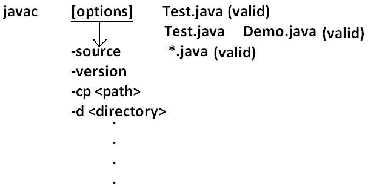
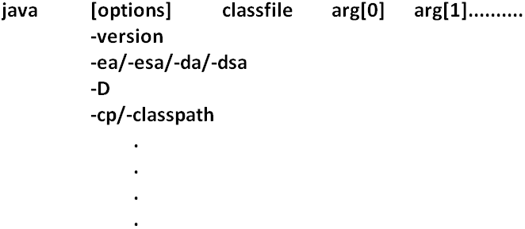
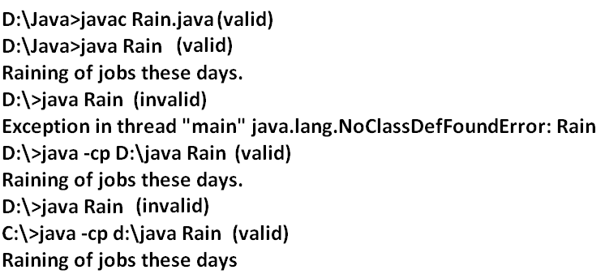
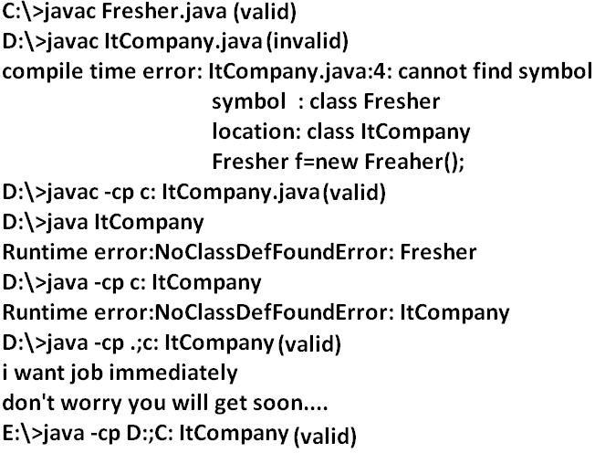
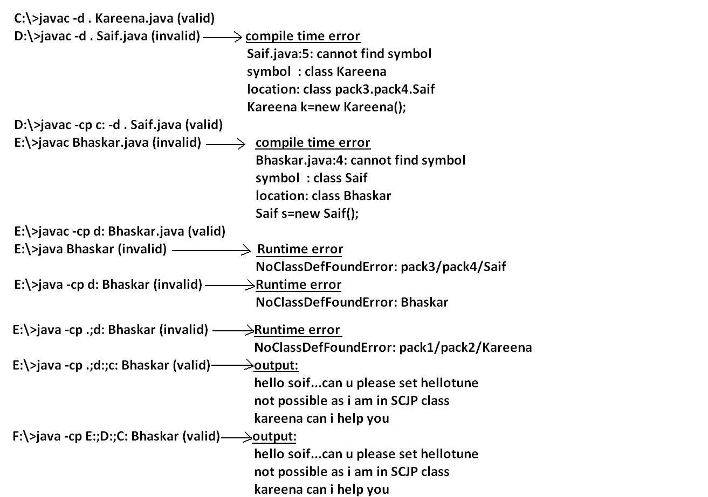
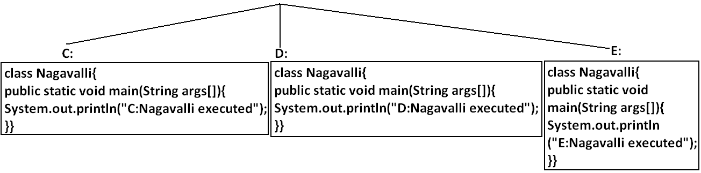
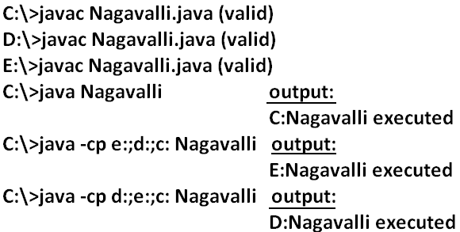
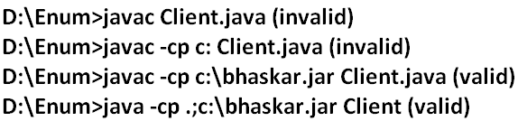
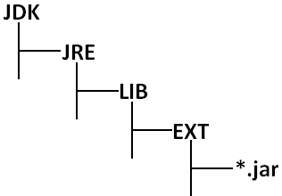
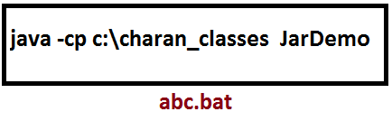

Development
Agenda
- Introduction
- Javac
- Java
- Classpath
- Jar file
- What is the difference between Jar, War and Ear ?
- Various Commands
- System properties
- How to set system property from the command prompt
- What is the difference between path and classpath ?
- What is the difference between JDK, JRE and JVM ?
- Shortcut way to place a jar files
- Web Applications Vs Enterprise Applications
- Web Server Vs Application Server
- Creation of executable jar file
- In how many ways we can run a java program
Introduction
Javac: we can use Javac to compile a single or group of ".java files".
Syntax:

Java: we can use java command to run a single ".class file".
Syntax:

Note :
We can compile any number of source files at a time but we can run only one .class file.
Classpath: Class path describes the location where the required ".class files" are available.
Java compiler & JVM will use classpath to locate required class files.
We can set the class path in the following 3 ways.
- Permanently by using environment variable "classpath". This class path will be preserved after system restart also.
-
Temporary for a particular command prompt level by using "set" command.
Example:
Once if you close the command prompt automatically this class path will be lost.
-
We can set the class path for a particular command level by using "–cp" (or) "–class path". This class path is applicable only for that command execution. After executing the command this classpath will be lost.
Among the 3 ways of setting the class path the most common way is setting class path at command level by using "–cp".
Note :
- Bydefault java compiler & JVM will search in current working directory for the required .class files
- If we set the classpath explicitly then JVM will search only in our specified location for .class file and it won't the search in current working directory.
- Once we set the classpath we can run our program from any location.
Example 1:
class Rain
{
public static void main(String args[]){
System.out.println("Raining of jobs these days");
}
}
Analysis:

Example 2:

Analysis:

Example 3:

Analysis:

Note: If any folder structure created because of package statement. It should be resolved by import statement only and the location of base package should be make it available in class path.
Note:Compiler will always checks one level of dependency, where as the JVM will check all levels of dependency.
Note:
In classpath the order of locations is very important and compiler & JVM will always search from left to right for thr required .class file untill match is available.
Example 4:

Analysis:

Jar file: If several dependent classes present then it is never recommended to set the classpath individual for every component. We have to group all these ".class files" into a single zip file and we have to make that zip file available to the classpath.This zip file is nothing but jar file.
Example 1 : To develop a Servlet class all dependent classes are available into a single jar file (Servlet-api.jar) hence we have to place this jar file available in the classpath to compile and run Servlet program.
Example 2 :
To use Log4J in our application all dependent classes are available in log4j.jar hence to use Log4J in our application. We have to use this jar file in the classpath.
What is the difference between Jar, War and Ear ?
Jar (java archive): Represents a group of ".class files".
War (web archive): Represents a web application which may contains Servlets, JSP, HTML pages, JavaScript files etc.
If we maintain web application in the form of war file, the project delevering , transportation and deployment will become easy.
Ear (Enterprise archive): it represents an enterprise application which may contain Servlets, JSP, EJB'S, JMS component etc.
In generally an ear file consists of a group of war files and jar files.
Ear=war+ jar
Various Commands:
To create a jar file:
D:\Enum>jar -cvf praveen.jar Beer.class Test.class X.class
D:\Enum>jar -cvf praveen.jar *.class
D:\Enum>jar -cvf praveen.jar *.*
D:\Enum>jar -xvf bhaskar.jar
To display table of contents of a jar file:
D:\Enum>jar -tvf bhaskar.jar
Example 5:
public class BhaskarColorFulCalc{
public static int add(int x,int y){
return x*y;
}
public static int multiply(int x,int y){
return 2*x*y;
}}
Analysis:
C:\>javac BhaskarColorFulCalc.java
C:\>jar -cvf bhaskar.jar BhaskarColorFulCalc.class
Example 6:
class Client{
public static void main(String args[]){
System.out.println(BhaskarColorFulCalc.add(10,20));
System.out.println(BhaskarColorFulCalc.multiply(10,20));
}}
Analysis:

Note: Whenever we are placing jar file in the classpath compulsory we have to specify the name of the jar file also and just location is not enough.
System properties:
- For every system some persistence information is available in the form of system properties. These may include name of the os, java version, vendor of jvm , userCountry etc.
- We can get system properties by using getProperties() method of system class.
The following program displays all the system properties.
Example 7:
import java.util.*;
class Test{
public static void main(String args[]){
//Properties is a class in util package.
//here getPropertes() method returns the Properties object.
Properties p=System.getProperties();
p.list(System.out);
}
}
How to set system property from the command prompt:
We can set a system property explicitly from the command prompt by using –D option.
Command:
The main advantage of setting System Properties is we can customize the behaviour of java program.
class Test {
public static void main(String args[]) {
String course=System.getProperty("course");
if(course.equals("scjp")) {
System.out.println("SCJP Information");
}
else
System.out.println("other course information");
}
}
output:
c:> java -Dcourse=scjp Test
SCJP Information
c:> java -Dcourse=scwcd Test
other course information
What is the difference between path and classpath ?
Path: We can use "path variable" to specify the location where required binary executables are available.
If we are not setting path then "java" and "Javac" commands won't work.
Classpath: We can use "classpath variable" to describe location where required class files are available.
If we are not setting classpath then our program won't compile and run.
What is the difference between JDK, JRE and JVM ?
JDK (java development kit): To develop and run java applications the required environment is JDK.
JRE (java runtime environment): To run java application the required environment is JRE.
JVM (java virtual machine): To execute java application the required virtual machine is JVM.
JVM is an interpreter which is responsible to run our program line by line.
Diagram:

- JDK=JRE+Development Tools.
- JRE=JVM+Libraries.
- JRE is the part of JDK.
- Jvm is the part of JRE.
Note: At client side JRE is required and at developers side JDK is required.
On the developers machine we have to install JDK , where as on the client machine we have to install JRE.
Shortcut way to place a jar files available in the classpath:
If we are placing jar file in the following location then it is not required to set classpath explicitly.
Bydefault it's available for Java compiler and JVM.
Diagram:

Web Applications Vs Enterprise Applications:
A web application contains only web related technologies Servlets, Jsps, HTML etc., where as an enterprise applications can be developed by any technology from Java J2EE like Servlets, Jsps, EJB, JMS components etc.,
J2EE compatible application is Enterprise Application.
Web Server Vs Application Server :
Web Server provides environment to run web applications, webserver provides support only for web related technologies like Servlets, jsp.
Ex: Tomcat server
An Application Server provides environment to run enterprise applications. Application server provides support for any technology from J2EE like Servlet, Jsp, EJB, JMS components etc.,
Ex: weblogic, web sphere , J Boss etc.,
J2EE compatible server is Application Server.
Every application server contains in built web server.
Creation of executable jar file :
import java.awt.*;
import java.awt.event.*;
public class JarDemo {
public static void main(String args[]) {
Frame f=new Frame();
f.addWindowListener(new WindowAdaptor {
public void windowClosing(WindowEvent e) {
System.exit(0);
}
});
f.add(new Label("I can create Executable Jar File"));
f.setSize(500,500);
f.setVisible(true);
}
javac JarDemo.java
1. java JarDemo
jar -cvfm demo.jar manifest.mf JarDemo.class JarDemo$1.class
2. java -jar demo.jar
3. By clicking jar file we can execute
Creation of Batch file :

By clicking this batch file , the java program will be executed.
In how many ways we can run a java program :
- by executing class file.
Ex: java Test
- by executing a jar file from the command prompt.
Ex: java -jar demo.jar
- By double clicking jar file
- By double clicking batch file
|